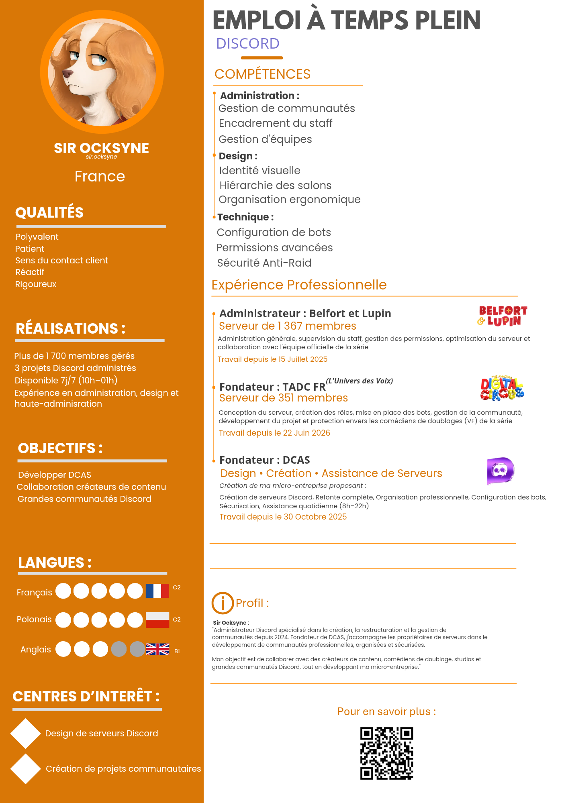

Administration
Création de serveurs, réorganisation et configuration technique.
Mon expérience dans la création et la gestion de communautés.
Création de serveurs, réorganisation et configuration technique.
Coordination du staff, gestion des permissions et application des règles.
Salons, catégories, rôles et identités visuelles.
Bots, tickets, journaux et rôles automatiques.
Organisation des protections anti-raid et des systèmes de modération.
Amélioration des communautés et suivi des projets.
Je suis cofondateur de la partie francophone du serveur, aux côtés de la communauté, de son équipe et du créateur de la série.
Mon rôle est de gérer la communauté française, son organisation et son fonctionnement.
La série raconte les aventures de Belfort, le chien du roi, et de Lupin, un loup, dans les jardins de Versailles.

Jai conçu un document consacré aux règles et aux sanctions afin de structurer la modération Discord.
Consulter mon document ↗Cette zone affichera le CV Discord que je choisirai de publier.
